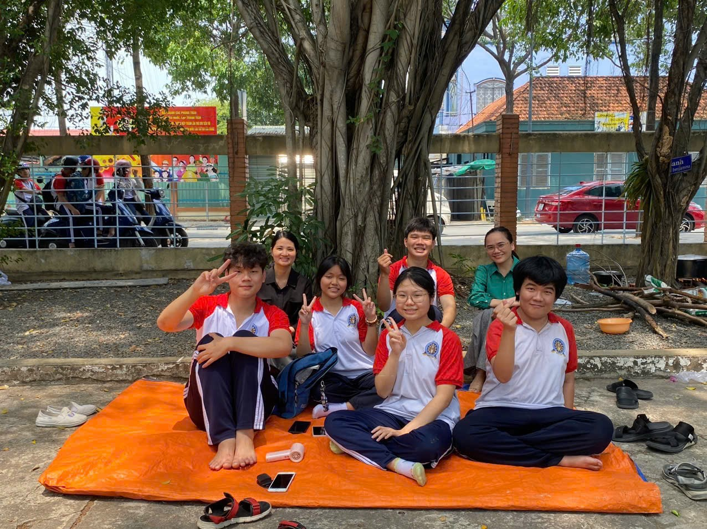
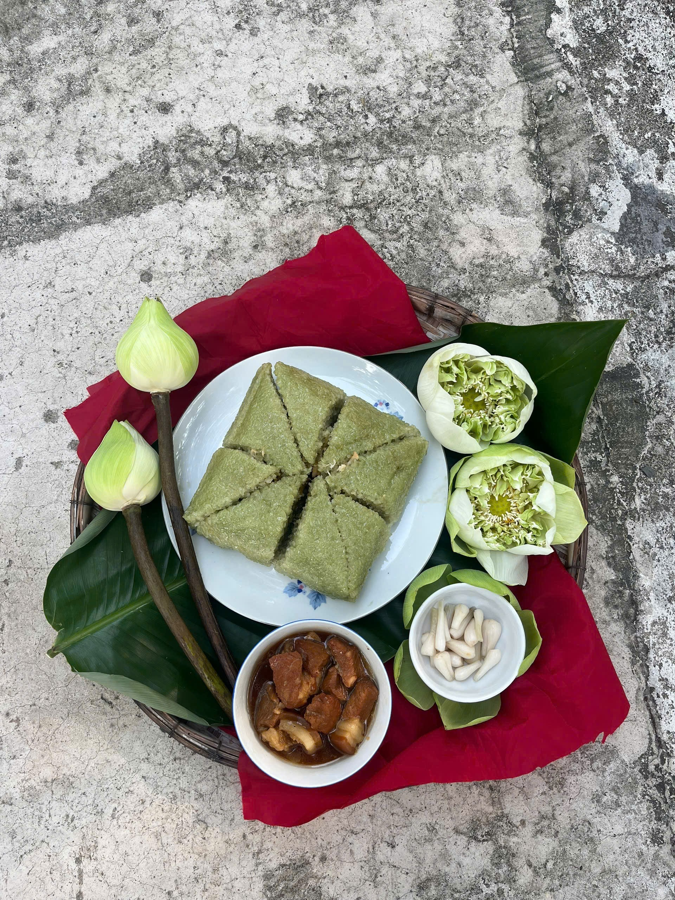
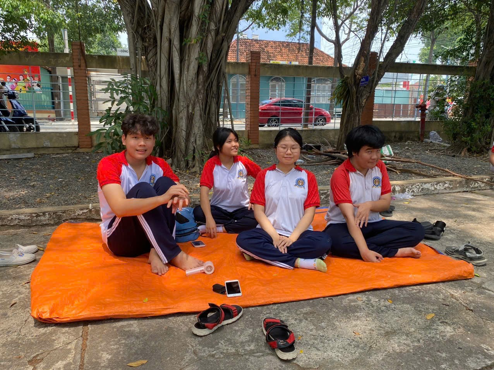
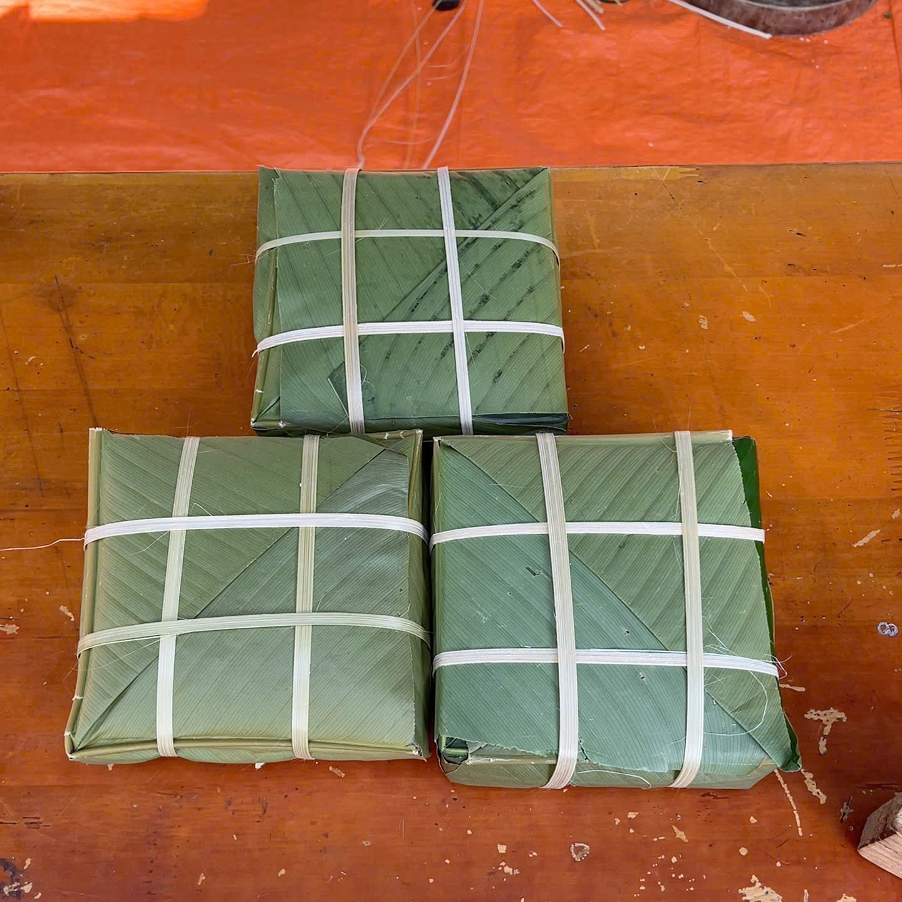

Trong cái se lạnh của những ngày giáp Tết, ánh lửa bập bùng từ nồi bánh chưng không chỉ làm chín hạt gạo nếp, mà dường như còn sưởi ấm cả những tâm hồn đang tuổi lớn. Bên bếp lửa, chúng mình kể cho nhau những câu chuyện, những lời tâm sự về ước mơ, hoài bão hay những áp lực học hành, lo âu về tương lai.




"Cảm ơn các bạn vì đã biến những giờ phút chờ đợi dài đằng đẵng thành một ký ức lấp lánh. Cảm ơn vì đã không để mình cô đơn giữa bóng đêm, đã cùng chia nhau củ khoai nướng cháy sém nhưng ngọt lịm, và cùng cười vang khi mặt đứa nào cũng lấm lem than bùn."